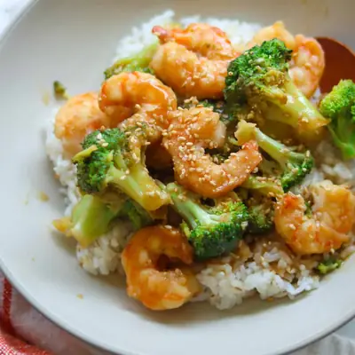

Shrimp and Broccoli Stir Fry

Ingredients
- 3-4 tablespoons low-sodium soy sauce
- 1 tablespoon oyster sauce (optional)
- 2 tablespoons orange juice
- 1 tablespoon rice vinegar
- 1 tablespoon sesame oil
- 1 tablespoon honey or maple syrup
- 2 teaspoons minced garlic
- 1 teaspoons grated ginger
- 1/4 cup low-sodium chicken broth (or water)
- 2 teaspoons cornstarch
- 1 pound medium shrimp, peeled and deveined
- 1 large head broccoli, cut into florets
- 2 tablespoons olive oil, divided
- Cooked rice or noodles for serving
Steps
- Make the sauce. In a jar or measuring cup, whisk together the soy sauce, oyster sauce (if using), orange juice, honey, rice vinegar, sesame oil, garlic, ginger, chicken broth, and cornstarch until smooth. Set aside.
- Cook the broccoli. Heat 1 tablespoon olive oil in a large skillet over medium-high heat. Add the broccoli and cook for 3–4 minutes, stirring occasionally, until bright green. Add 1/2 cup water, cover, and steam for 2–3 minutes, or until the broccoli is tender-crisp. Transfer to a plate.
- Cook the shrimp. Pat the shrimp dry with paper towels. Heat the remaining tablespoon of oil in the same skillet over high heat. Add the shrimp in a single layer and cook for 1–2 minutes per side, until pink and opaque.
- Bring everything together. Return the broccoli to the skillet. Give the sauce a quick whisk and pour it into the pan. Toss continuously for 1–2 minutes, until the sauce thickens and coats the shrimp and broccoli evenly.
- Serve over rice or noodles and enjoy.
Recipe by Min Kwon · Kidfriendly Meals, from MJ and Hungryman. Saved here for personal use; the original has the full notes, tips and photos. Open original